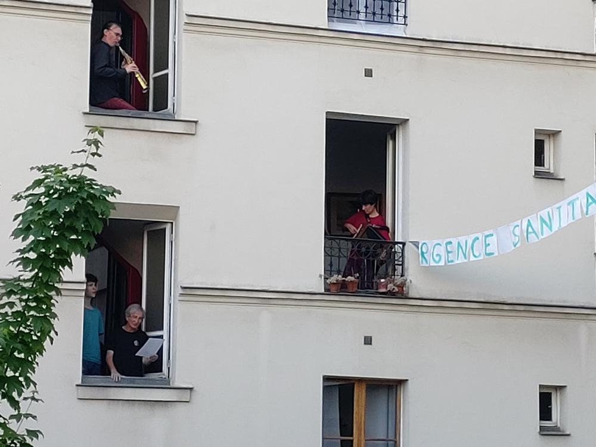
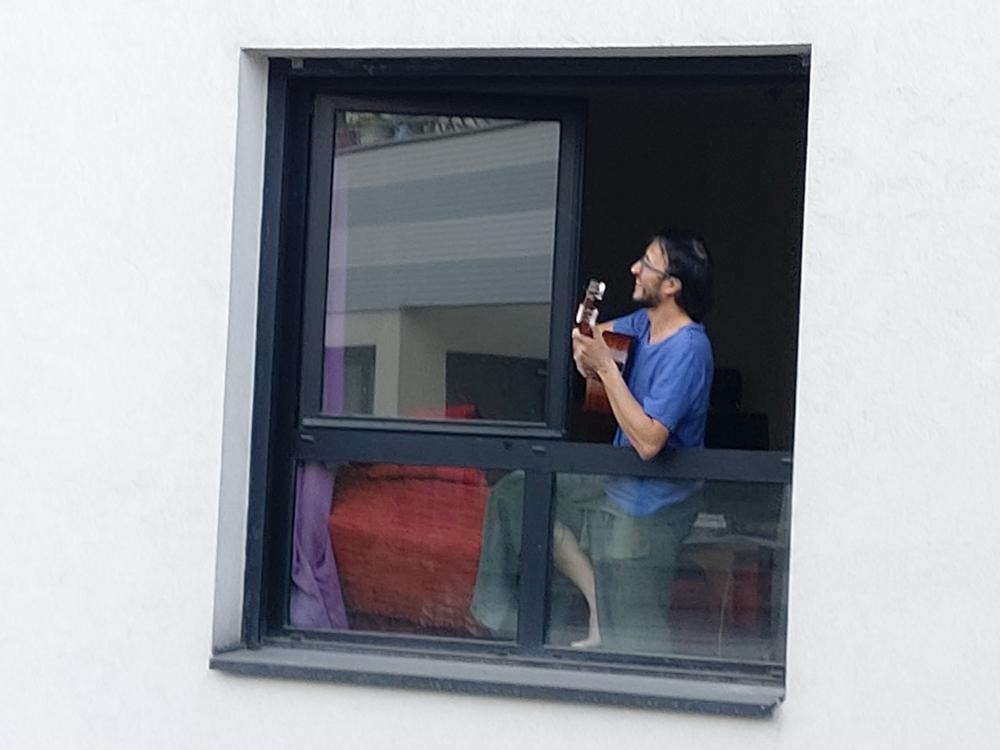
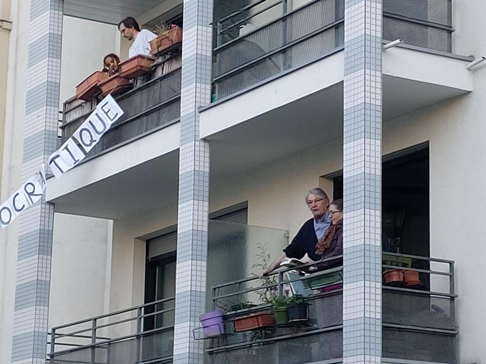
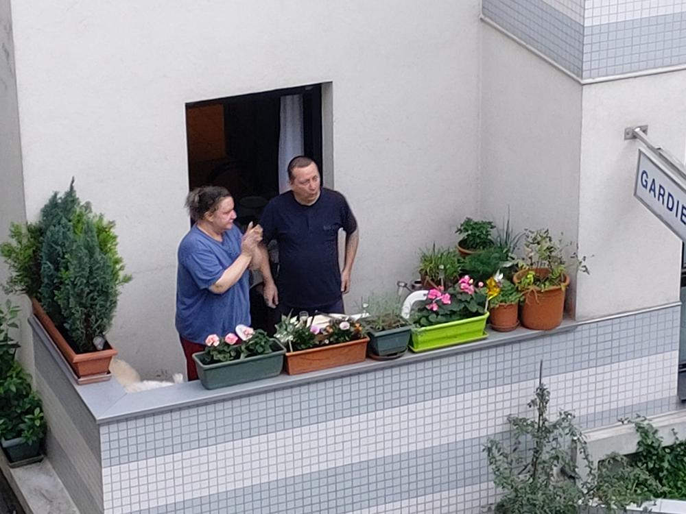
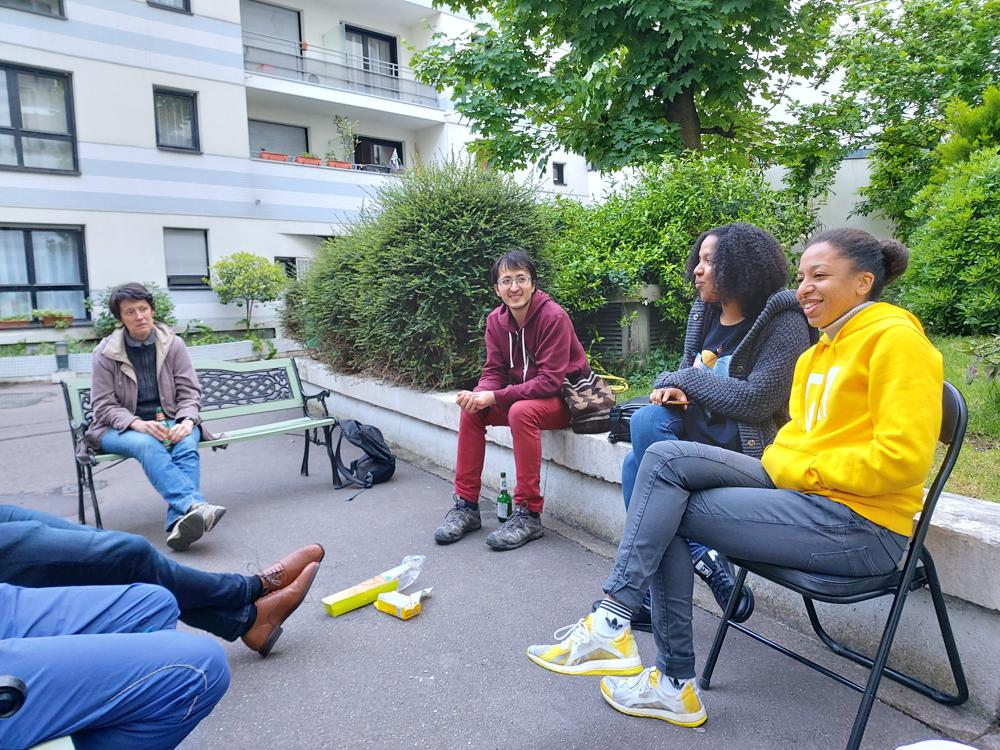
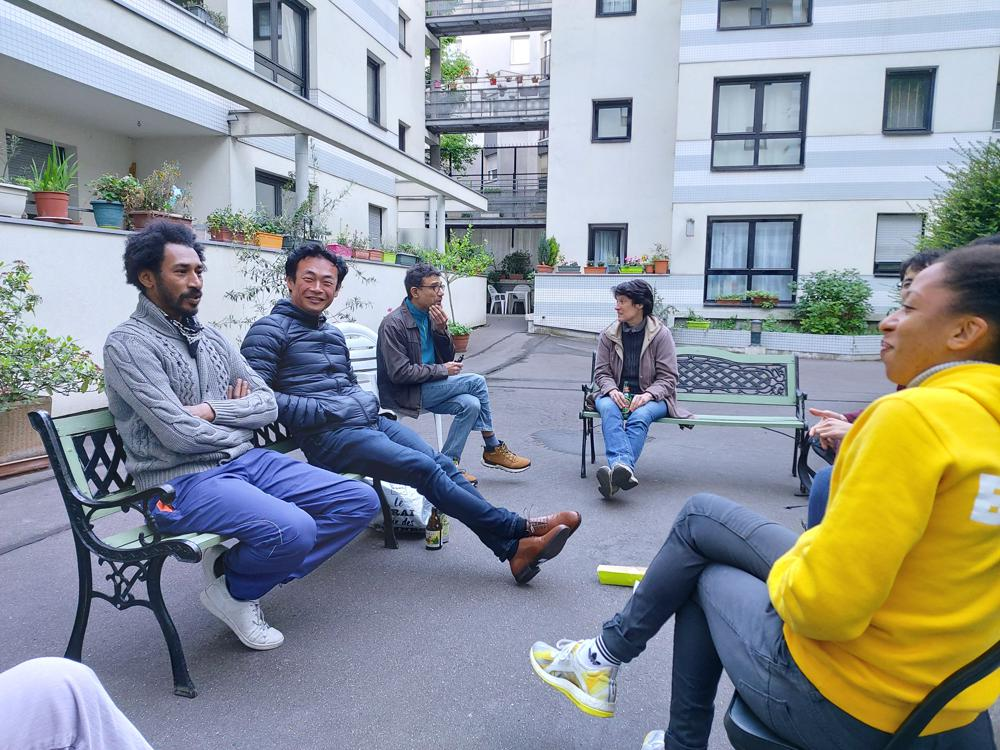
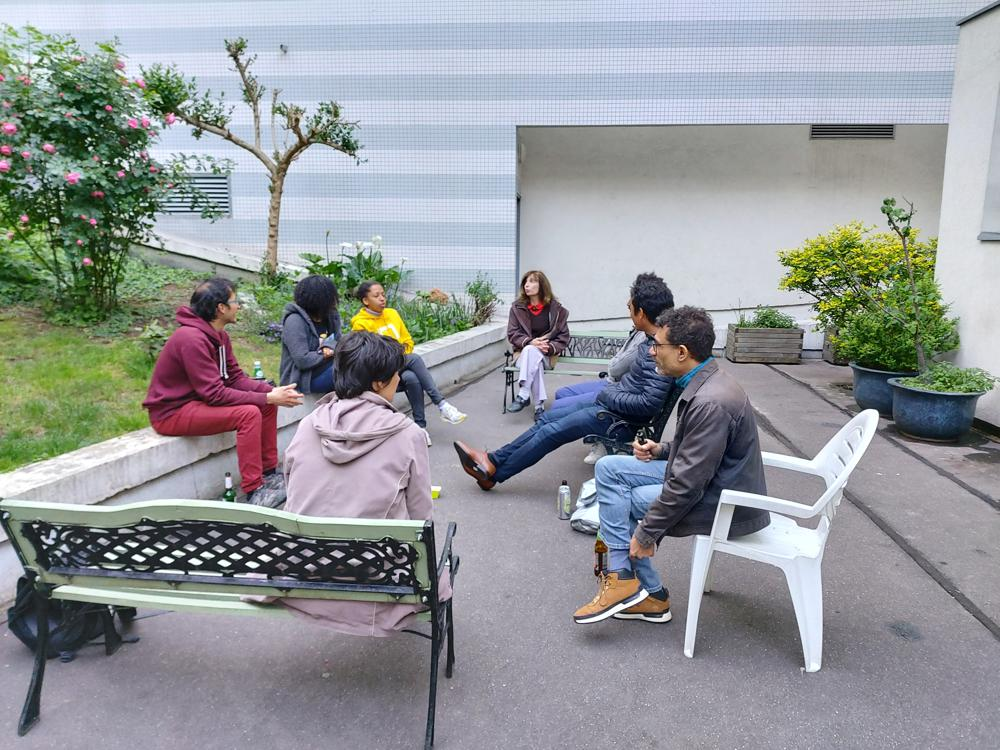

3 mai
Les photos d'hier :
Hier, nous avons chanté "Au champs Élysées". Je n'ai malheureusement pas pu filmer. Si vous avez des vidéos, envoyez les à blogdesvoisins@gmail.com !
Merci à Jean-Pierre pour ces quelques photos des chants et de l'apéro :
      Avant-hier, pour le premier mai, nous avons chanté de nombreuses chansons.
Nous avons premièrement chanté l'estaca :
Puis la semaine sanglante :
El pueblo unido :
Et l'Internationale :
Pierre nous a offert un petit concert de piano :
Si vous avez des vidéos, des photos, ou des enregistrements, n'hésitez pas à les envoyer à blogdesvoisins@gmail.com !